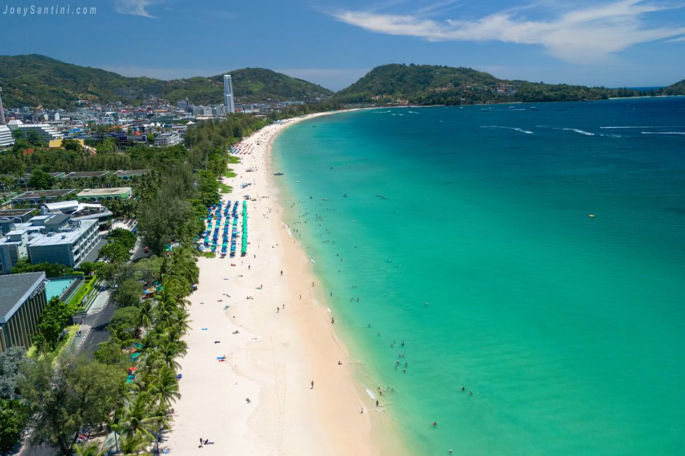
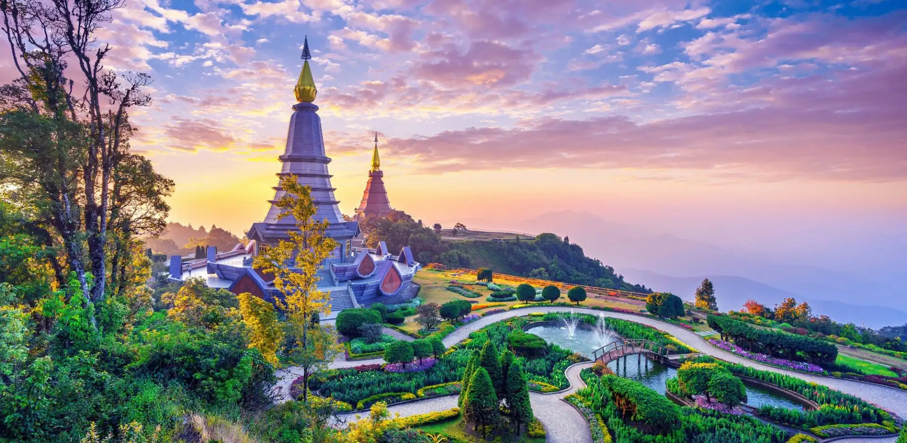

Popular Destinations
Bangkok
Bangkok is one of the most popular cities in Asia. It is well known for many attractions, such as the nightlife, street food, red-light districts, etc. The most popular destinations include The Grand Palace, Chatuchak Weekend Market and Khaosan Road. This city is a blend of historic buildings and contemporary architecture. Bangkok attracts tourists of all ages from all parts of the World (Mahapatra & Bindloss, 2021). Bangkok Wikipedia Page

Phuket
Phuket is Thailand's largest island, it has many beautiful beaches such as Patong, Karon and Kata. This location offers a variety of activities such as snorkelling, diving, hiking, biking, shopping, and indulging in the local cuisine. There are also plenty of places to explore, such as Buddhist temples, markets, bars, etc. This island is perfect for those who enjoy beaches, Thai culture and partying (Thuan, 2024).
Chiang Mai
Chiang Mai is the largest city in Northern Thailand, it is also the third largest city in the Nation and it is located on the Ping River. This city is a flourishing tourist destination, with many popular destinations such as the Twin Pagodas, Wat Phra That Doi Suthep temple complex, Warorot Market, Elephant Nature Park and Doi Inthanon National Park. The Thai royal family has their summer home nearby in Phu Ping Palace (The Editors of Encyclopaedia Britannica, 2024).
